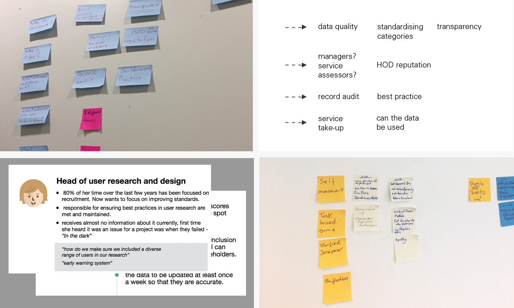
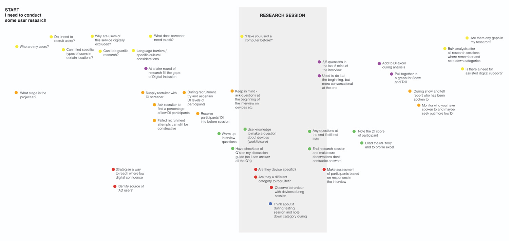

Creating services that are inclusive to everyone, means designing them bearing in mind all levels of digital skills, all levels of language and all access needs. To try to make sure that we are testing our services with as wide a variety of people as possible, GDS developed a digital inclusion scale to categorise users into different personas of varying digital skills and confidence. By having a measure for researchers to refer to, we are more able to monitor whether services are working properly for all users.
In the Home Office a design and research project was set up to create a formal way of gathering this information while creating a more uniform understanding of what each category is. When I joined the team, a prototype had been created already that took researchers through a series of questions after their research session resulting in the correct Digital Inclusion category. We developed it through a heuristic review and testing and iterating to a version with clear guidance, more GDS aligned design patterns, and a simple dashboard to view the output, which got to a point where it was testing very effectively.
The other results of our rounds of testing with user researchers was the suggestion that the need for this data collection may not be from them; after I attended ‘The problem to solve’ workshop, by Kate Tarling, I began to think that we might not understand the whys and whos of the project. We held a workshop following Kate’s suggested framework, and kicked off a mini discovery phase to understand more clearly the separation between the need for the data being collected and the needs of the person using the ‘service’ to collect the data.
Through a series of interviews conducted by the user researchers, we identified high level users and extracted their needs from collecting Digital Inclusion Data. I conducted a workshop with a collection of Home Office Digital user researchers to get a better idea of the general level of knowledge of the area, and also understand their research process and timeline. What emerged was useful methods researchers use to extract information, that their was a better understanding than we assumed, and that every researcher recorded their sessions in different ways.
Bringing together the different needs we had collected we moved into an alpha stage of the project, confident that we knew clearly what we were hoping to achieve. After starting with the widest selection of sensible and more outlandish design suggestions, we have begun to simultaneously developing two prototypes rapidly iterating and testing, a training and knowledge resource, and form of quick accessible data entry.

the existing prototype and our first iteration
discovery process and findings

digital inclusion knowledge workshop
workshop outcome: user researcher collective timeline

user journey for digital inclusion data

first iteration of working alpha prototype